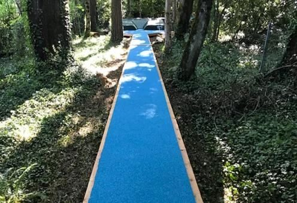

VSS-1 Surface & Roll-Out Mat
A sandwich-system synthetic surface tested and certified by the IAAF for international competition. It's built to cut down on shin splints and hamstring strain. It also comes as a roll-out mat for backyards, gyms and practice halls, and outlasts most standard roll-outs.